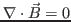
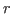
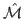
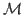
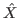
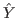

Next: About this document ...
Edward Phillips
Block Preconditioners for Fully Coupled MHD with Lagrange Multipliers
Mathematics Building
University of Maryland
College Park
MD 20742
egphillips@math.umd.edu
Howard Elman
Eric Cyr
John Shadid
Magnetohydrodynamics (MHD) models the flow of electrically conducting
fluids by coupling the Navier-Stokes to Maxwell's equations. In this
setting Maxwell's equations are often posed in mixed form to explicitly
enforce the solenoidal condition

, which requires
adding a Lagrange multiplier 
to the induction equation governing the
magnetic field. The resulting equations form a set of two coupled saddle
point problems. Discretizing the fully coupled system results in a
sequence of linear systems with the block form
If we define the blocks
then a block LU decomposition of the discrete MHD system suggests a
preconditioner of the form
where

is an approximation to

, and

and 
are approximations to the Schur complements
We consider expressions for
proposed for Maxwell's
equations in mixed form and use these to develop the approximations
and
. We test the performance of the resulting
preconditioners for both stable and stabilized finite element
discretizations, demonstrating their parallel scalability as well as
their robustness over physical parameters on a set of two- and
three-dimensional test problems.
Next: About this document ...
Copper Mountain
2014-02-23